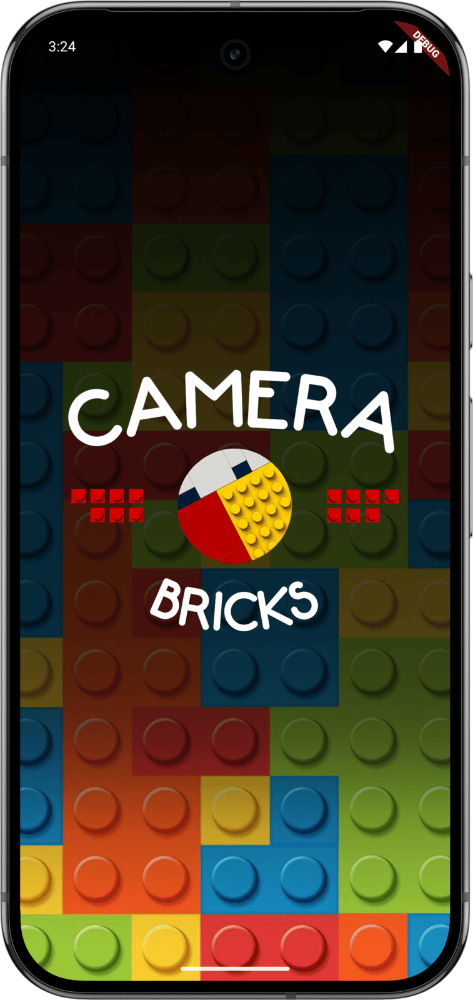

Brick Picture - Mobile Application + API
Convert your picture into Lego style and share it on your favorite social networks.
Python
Dart
Flutter
FastAPI
Convert your picture into Lego style and share it on your favorite social networks.
Brick Picture is a Flutter mobile app, paired with its own Python backend API, that converts any photo into a Lego-brick style mosaic ready to save or share on social networks. The app handles capture, upload and presentation, while all the image processing happens on the server.
On launch the app checks that the server is reachable, then lets the user snap a photo or pick one from the gallery and choose a brick style: Circle, Circle Flat, Square or Square Flat. While the picture is generated, a full-screen looping video keeps the user entertained.
The whole experience is skinned around a One Piece pirate motif: hand-drawn titles, a Jolly Roger brick logo, animated notifications with themed icons and a brick-patterned background.
The finished poster can be saved to the device gallery or shared directly to other apps with a single tap. If the server cannot be reached at startup, a retry flow explains what happened instead of leaving the user with an empty screen.

The client is a small, focused Flutter codebase for Android and iOS. The photo is uploaded together with the chosen style to a FastAPI service written in Python, which does the heavy image processing and returns the finished mosaic.
Powers the backend API that does the actual image-to-brick conversion: downsampling the photo to a brick grid, mapping each cell to the closest palette colour and rendering the requested stud style back out as a JPEG.
Implementation language for the Flutter client — state management for the connection check, image picking, upload progress and the animated snackbar/loading UI.
Cross-platform mobile framework behind the app itself: camera/gallery capture via image_picker, the full-screen generation video via video_player, and saving/sharing results via flutter_image_gallery_saver and share_plus.
Serves the /generate_brick_art endpoint the app calls with the uploaded photo, brick style, brick count and colour palette, and returns the processed image as multipart/form-data over HTTP.